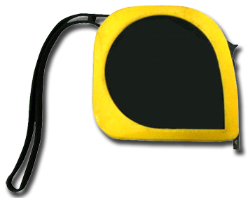

准备工具
在安装前先备齐安装过程中需要使用的工具。
需要准备的工具
需要用户准备的工具请参见表1。
工具名称 |
规格及用途 |
图示 |
|---|---|---|
激光笔 |
用于辅助调试频闪灯照射位置。 |
|
测距仪 |
用于测量安装距离、高度等。 |
|
万用表 |
用于测量摄像机电源输入是否符合要求。 |
|
网线测试仪 |
用于测试网线是否制作正确，线路是否畅通。 |
|
网线钳 |
用于制作水晶头。 |
|
剥线钳 |
用于电源线、告警线等的剥皮。 |
|
内六角螺丝刀 |
规格：H3。 用于拆卸和紧固M4型号内六角螺丝。 |
|
十字螺丝刀 |
规格：0#、1#和2#。 用于拆卸和紧固十字螺丝。 |
|
一字螺丝刀 |
刀头宽度：2.5mm，批头长度大于75mm。 用于拆卸和紧固一字螺丝。 |
|
卷尺 |
用于测量线缆所需长度，安装高度等需要测距的场景。 |
 |
套筒扳手 |
规格:M6。 |
|
防静电手套 |
用于防静电。 |
|
剪刀 |
用于裁剪防水胶布，绝缘胶布等。 |
|
裁纸刀 |
用于拆开摄像机包装盒。 |
|
扳手 |
用于拧动螺丝。 |
|
斜口钳 |
用于剪断多余的喉箍环等。 |
|